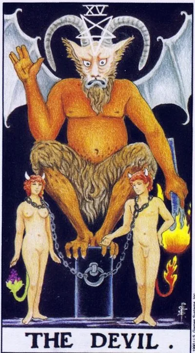

Major Arcana · XV
XVThe Devil
The chains we call necessity: a card of attachments, shadow desires, and the power of matter.
Archetype and core meaning
The devil is sitting on a pedestal, but look at this: the chains on the captives at the foot are long and loose, you can take them off at any time. That's the whole point of the arcana: the cage is not kept locked, but by the habit of wearing it.
The card describes everything that our weak side possesses: passion that is passed off as love, work that eats personality, substance, money, status, approval. It doesn't forbid wanting, it invites us to look desires in the eye and ask who uses whom.
The shadow part of the arcana is honest, like a surgeon: it shows the material from which freedom is made; the acknowledged fear loses power over actions; the aloud desire loses its fever; therefore, the devil, contrary to reputation, is not evil, but sober.
Daily life
Temptation day: sales, delicious, "another episode." Check your budget and refrigerator against your real needs. There's a little blackmail, maybe, with guilt, favor, old debt; notice where you're being held and where you're holding yourself. One honest look at your chains weakens them by half.
Work and career
Businesses smell like hard play: manipulation, gray schemes, a tyrant boss or a conditional partner, and you can count honestly what you get for your loyalty and what you pay in return. Work can be money-based and it can be strangling, and it goes up, and you can refrain from questionable deals: exit is always more expensive than entry.
Relationships
Passion with a cage-like flavor: jealousy, possessiveness, a bond that has long been displeased but holds — habit, money, fear of emptiness. The card doesn't necessarily portend a break: it demands honesty of desire. If the union is built on control, ask yourself what you fear.
Health
The arcanum zone is all kinds of addictions: sugar, nicotine, alcohol, endless scrolling. The body signals overstrain where you artificially turn yourself on. There are problems of an intimate nature and purely psychosomatic reactions from the unspoken.
Spiritual meaning
The devil is the master of the material plane and the guardian of the initiation: the one who has not met his own shadows remains his driver. In practice, the arcana is used to work with subconscious programs, remove attachments and money blocks, recognize other people's manipulations. His lesson is harsh: force through the denial of desires is false; the real comes through their subordination to the spirit.
The chains are unbuttoned: the dependence is seen from the outside, and the hand has already found the clasp.
Archetype and core meaning
The inverted Devil captures the moment when the prisoner blinked: enough. The chains still ring, but the clasp is found. It's a card out of toxic bonds, codependent relationships and habits that were held only on inattention.
Often it captures the epiphany itself, and you can see who is pulling the strings and how, and that very appearance is a disinfectionate puppeteer, and healthy anger is healing when it turns into action, not a new way of biting yourself.
The shadow of the arcana is a liberating display: quit smoking and started to get stuck, went from tyrant to controller, true freedom is tested by time, not by declaration.
Daily life
A good day to unload: cancel your obligations, pay back your debt, throw away the trash that eats up space, say it out loud to one person for weeks, but out loud, and the manipulations that you see today by your salespeople, your family and your colleagues won't work again: knowledge makes them helpless.
Work and career
The work bond is weakening: you can refuse a toxic customer, get out of a swamp project, demand a review of the terms and get consent. Release comes through documents and facts, not through the stage. Beware of demonstrative gestures: going nowhere out of pride is the same trap, only now your own.
Relationships
The separation period: the couple breaks out of the circle of jealousy-guilt-forgiveness or breaks up completely; the return of control looks unusually quiet — no wars, just boundaries appear; perhaps a farewell to the dependence on someone else's approval: for the first time, likes not the abstract "someone", but yourself; the bonds held on fear lose the magnet.
Health
Detox time in every sense: the body willingly lets go of the accumulated, if you help with water, movement and sleep. Addictions are treatable — especially with the support of loved ones and professionals. Set success in the environment: fewer triggers around, more alive instead of surrogates.
Spiritual meaning
A magically inverted arcana is a sign of a successful exorcism of one's own shadow: programs are recognized and discharged. Liberation practices, from birth ties to financial curses, work only when one changes behavior, not just candles. Force returns through simple acts of will: said no, and did not change his mind by morning.
🌿 In brief
The main idea
The devil is a concentrated desire. The desire that a person has given a specific goal to becomes a huge driving force, and the problem begins when a person stops controlling his desire and becomes controlled by it.
How it manifests
Charisma, strong motivation, ability to engage others, protest against traditions, desire to get material results.
Work and money
Marketing, advertising, politics, influence, money, loans, mortgages, and other forms of attachment.
In a relationship
Strong sexual attraction, addiction, shared desires, strong emotional or physical attachment.
The shadow side
Manipulation. Man can no longer distinguish his own desire from the desire that has been imposed upon him.
Feature of the school
The devil is connected to Sagittarius and the Ninth House, and he asks, "Why should I live like this?"
📜 In detail — lecture extracts
Essence of the card
The devil is a "concentrated desire" expressed in a goal that moves people forward: "the devil is a desire that moves people constantly forward to some goal." He is the master of material life: people are chained to the fleshly essence - "however you desire something sublime, you are still chained to the desires of your body." The card is not as bad as it seems: "there are no bad and good Tarot cards"; it is seated by two brothers from IX house - Jupiter and Neptune (light and dark), and the bright side of XV is called the warrior, the "arrowman" Michael, the "the previous player."
Upright position
There is no separate block of “value by provisions” in the lecture – the list goes on in a solid way (he brings the practice of layouts to closed courses).
Society and desires. The charismatic person who is charismatic is "the same Lenin from the armored car": he wants others to do it for him. The preacher-leader and missionaries with torches follow their passion fire.
The V-VI Arcana (Hierophant, Lovers) is opposed to XV: "traditionally it is, but for myself I want it very differently." The devil is an oppositionist, a sectarian, a Protestant; any opposition figure follows this card.
The difficulty of subordination: you do what your boss wants and you forget your desire; or you act as the Devil of the Opposition ("the girls in accounting go to demand a job before five") - "It's Zeus and the brothers going to Kronos."
Finance and property. Marketing and advertising: buy our elephants, happy people in commercials impose other people's wishes, social advertising is "the same devil, only good", a variant of the archangel Michael. Payroll dependence; voluntary attachments - loans, mortgages: we are sold this attachment.
Psyche and self-development. Habits, weaknesses, true desire. Naked figures of the card are truth in their pure form (clothes hide, like the High Priestess): this is your true desire. Character is heated by reason (cards of the Sun and Power), and the animal climbs on XV: "I want - and all here." You can win only by the power of reason - knowledge, Hermes / Mercury (Sword Perseus received from Hermes).
Emotions and personal life. A person's real desire and character: if your "what I like" matches the others, you're lucky, otherwise you'll be an outcast; so a true desire to show is not always worth it. Dependence on the partner: two are tied to the same stud, "husband and wife are one Satan"; shared desire makes the couple right. Sexual practices: perversion is a matter of third-house morality; "everything is natural is not ugly" - if both like it, the card is rather good. Manipulation by a full-lengthing partner; in damage tests, a celibacy crown, a third-side magic meaning.
Addictions: alcoholism, gambling, drug addiction - a mechanism of habit that chains to the physical body.
Negative meaning
The negative meaning is manifested in two positions: work is “the feeling that you are being manipulated”, when in fact the boss is simply paying money for what he needs; and fraud is played with and deceived by your desires. The neutrality formula: “you should not take any side – for the tarologist it is important to feel the card”, and the feeling is moving forward from something wrong; everything depends on the goals of the person (Jeanne d’Arc, which was the Archangel Michael, the material embodiment of the same force).
School emphases and distinctive points
- - System astrology: XV = Sagittarius, IX house, Jupiter + Neptune. On Baphomet Levi's motto "dissolve and thicken" - Neptune dissolves, Jupiter thickens. VI arcana (Twins / III house) stands opposite XV - "a gross parody of Lovers": before the Fall Adam and Eve are still "twins without separation of sexes".
- Three fires: Aries - cardinal (lightning to the hunter), Leo - fixed (the hearth in the cave, the child watching it), Sagittarius - mutable (slash-and-fire agriculture, forest fire). The devil - the third fire: politics, an idea that burns the masses.
- - Goat and azazel: the ritual of a scapegoat with a red cloth - the sins of the family are taken to the desert to approach the Supreme; hence the bright side of the card. The goat is bolder than a ram and leads the herd - it is easier to manage (manipulator, boss, politician shepherd).
- Lucifer: literally "light-bearing", the morning star Venus; the fallen angel only became from the late Middle Ages. Zeus is the same rebel against Cronus: the generational change of gods is deeper revealed in the X house - Tower. Danko and Prometheus are the light Lucifer.
- Andromeda and Perseus: the card's chained figures; the monster, the chthon (the crocodile of the Egyptians); victory, the sword of Hermes, i.e., intelligence and knowledge; Princess Leia in Jabba - "one in one Andromeda".
- Eros with a torch set his heart on fire and led him wherever he wanted; only Aphrodite and Saturn could clip his wings - the love desire fades from time to time, a hint of the next card.
- Waite's doorkeeper is the key: "Wait says the card is not so bad" → Archangel Michael, Archistratig; exile from paradise = expulsion of the scapegoat.
- Opposition vs. service: Sakharov, Navalny, Guy Fox (Victorian Navalny); Osho and Crowley as false guru (Do what you want; Crowley is the ancestor of modern Satanism, which I congratulate you on).
- The inverted pentagram and raised hand are a parody of the Middle Ages to the blessing of the Hierophant; the Templars were accused of worshipping Baphomet (the image resurrected by Eliphas Levi).
- The magician vs. the devil: the magician is the doer and leader, he does himself; the devil does nothing himself - concentrates the desires of the crowd, and "for him others do everything."
- - Cinema as textbooks of the archetype: "Devil's Advocate" (manipulation textbook), John Connor from "The Terminator" (right to lead), Agent Smith from "The Matrix" (true manipulator devil vs. Neo-Zeus, collecting people's desires), Immorthan Joe from "Mad Max" (sect and Valhalla), "Star Wars" (Lucas reread Castaned after the accident; the fall of Anakin), "V means Vendetta", "Dune of Neo-Zeus, collecting people's desires), "Imorda" Imorras-Hollywood - "60" in general "the big Armads."
- - Colleagues: advises reading Banzhaf ("normal good correct tarologist"), respects Yuri Khan for astrology, criticizes Sklyarova's marketing and superficiality of Savchenko. The "two eyes" method: additional discipline (astrology, numerology, Kabbalah) gives stereoscopic vision of cards.
Keywords
- Desire; movement towards the goal; charismatic leader; individualism and opposition; manipulation; temptation and temptation; attachment and dependence; habit (animal nature); expansion (IX house, Sagittarius); the true desire of the “naked soul”.
- ---